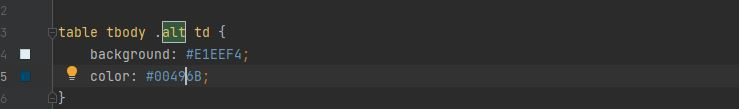
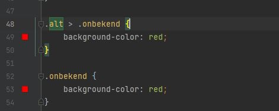

CSS regel met alt class:
Class "onbekend" toegevoegd en ee CSS regel ervoor gemaakt:
Als er niet verwezen wordt dat de class "onbekend" onder de class "alt" staat, dan zal de opmaak voor "alt" doorgegeven worden.
Het werkt pas op deze manier:
